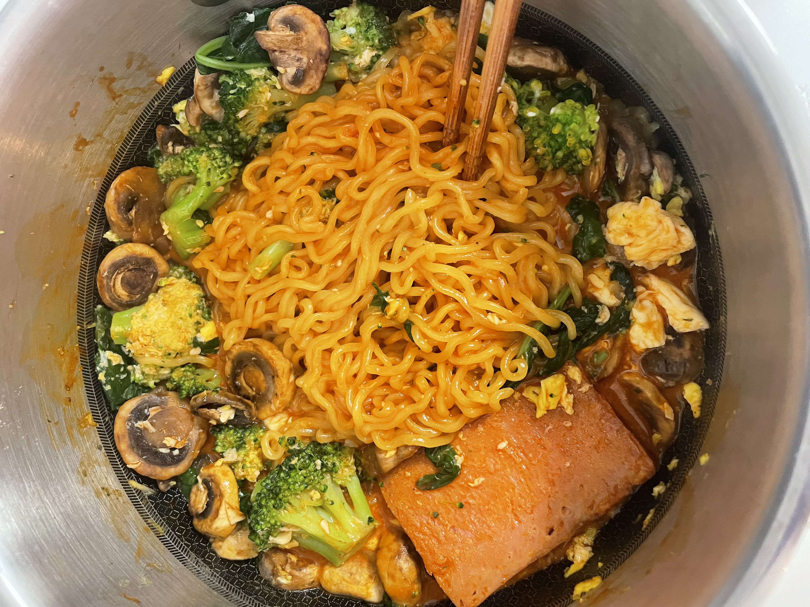
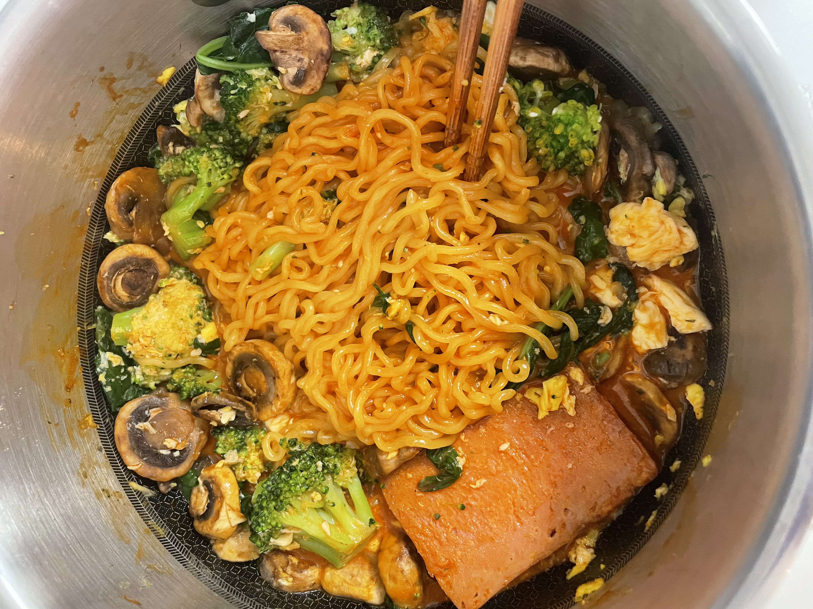

buldak
kimberly loves to eat buldak. it's one of her defining characteristics to be buldak-obsessed. her favorite flavors are:
- kimchi
- curry
- quatro cheese
- carbonara
- rose
kimberly has been eating buldak for as long as she can remember. it has been probably around 8 years since she first started! kimberly will never stop eating buldak because
it is her favorite food ever. it may be super unhealthy and have a questionable amount of sodium, but she will continue to eat it throughout her living days regardless.
here are some images of her buldak!
music
kimberly listens to a lot of music. one of her hobbies is literally laying on her bed while listening to music. she listens to a lot of music on repeat,
which is because she likes staying in her comfort zone.
a couple of her favorite artists include:
- the 1975
- paramore
- fleshwater
kimberly doesn't have a lot of favorite artists because she switches up her music taste every single month. it is kinda crazy. it's similar to how
she changes her hobbies and interests every month as well. however, she's always stayed consistent with coding and math! #womaninstem!!
metal
there is a separate subsection for metal because it holds a special place in kimberly's heart. also, kimberly changes her music rotation. a lot.
metal is one of the genres that she listens to seasonally, which is why it deserves its own section. she strictly listens to only metal during the
winter. otherwise, she's listening to it while she's stressed or wants a break from the usual rnb and chill songs.
that might seem counterintuitive since metal is a bit aggressive, but it helps her release whatever she wants to let out.
also, did you know that people who listen to metal have similar personalities to people who listen to classical music? very cool!
kimberly didn't listen to metal before and was very into bedroom indie pop. however, she discovered a song called custer by slipknot and...
she was terrified. she had never listened to anything as aggressive as that song before. and then she listened to it again...and again...and she was HOOKED.
she doesn't know a whole lot about the distinction between metal genres. in fact, she doesn't even know if some of the songs she listens to are metal.
anyway, here are her top favorite songs that are hopefully metal or else this would be really embarrassing:
- without a whisper by invent animate
- what was really said by fleshwater
- linda claire by fleshwater
- risk by deftones
- two-way mirror by loathe
- a sad cartoon by loathe
- gifted every strength by loathe
- psychosocial by slipnkot
- ...and of course, the one who started it all, custer by slipknot
there's quite a few more so let's just gonna leave it at that...
other awesome music
since kimberly doesn't listen to metal all year-long, what else does she listen to?? she listens to a lot of 1975 and has been listening
to mostly the 1975 for the past month. she also likes paramore. here are some of her favorite songs across all genres:
- it's not living (if it's not with you) by the 1975
- settle down by the 1975
- somebody else by the 1975
- decode by paramore
- ain't it fun by paramore
- future by paramore. this song is really long for no reason and it's mostly instrumental but it just speaks to kimberly...
- dark thoughts by lil tecca. didn't see that one coming now did you!
- supermassive black hole by muse
- lights out, words gone by bombay bicycle club
- i'm not gonna teach your boyfriend how to dance with you by black kids
- hold on, we're going home by drake and majid jordan
- staring by tipling rock
kimberly's rotation of favorite songs changes a lot, so check back in a while to see if it updates!
here is kimberly's main playlist as of now. she changes playlists approximately every 6 months.
(last updated 6/14/25)
collector kimberly
kimberly has always loved collecting things. she had an obsession with crystals for a while (which are still in her bedroom) and pokemon cards.
she still has an obsession with stationery, textbooks, and figurines. she stopped buying pokemon cards because she was wasting money
and never got any good cards. however, she still has this app on her ipad to fill her addiction for opening pokemon packs.
figurines
one of kimberly's biggest collections is her figurine collection. all of kimberly's figurines are somewhere on her desk,
which also has shelves. she has probably spent over $200 on all of her figurines. if the cost of gifts were included, it would be over $300.
kimberly also really likes peach riot from popmart, and she has 6 figurines. 5 of them are gigi, which is absurd. why is gigi infiltrating
her peach riot purchases?? please...all she wants is a frankie figurine for once...just one...
other than peach riot, kimberly also likes to collect other popmart figurines. she has two big bang theory figurines which are howard and leonard.
her favorite character is leonard by the way!! kimberly also has 5 molang figurines, and each one was around 20 bucks. that means in total her entire
molang collection cost $100. kimberly did not think about this until she wrote this. it is probably time she rethinks where her money goes.
kimberly also has two funko pop figurines. one is of a nerdy hello kitty which she thinks represents her very nicely, and a pokemon that she forgot the name of.
she has a lot of random figurines that she bought in vietnam too. a lot of them are sanrio related.
she hopes to buy hirono figurines, but knows that she will probably end up spending another $100 dollars trying to get the ones she wants. it is probably
best if she stops this obession before she goes to college and is in extreme debt.
textbooks
the other biggest collection that kimberly has is her textbooks. kimberly is very curious about a ton of different topics. she feels the need to learn everything and has textbooks on a bunch of
topics that she wants to learn. she buys a lot of her textbooks from the library bookstore since they are really cheap. to give you an
idea of how cheap they are, she recently bought a calculus textbook, written by james steward, for just $2. it was in peak condition and had
no creases, marks, anything. it was like it was brand new. AND FOR $2!!!! she also bought a linear algebra textbook this week from the same
library.
in total, kimberly has around 22 textbooks. topics covered include coding, physics, chemistry, biology, and of course, math. as you can tell,
kimberly is quite passionate about math.
kimberly's goal is to finish reading half of her linear algebra textbook and half of her calculus textbook by the end of summer. she will update
this website with her progress when school starts. a separate section will be dedicated to all the goals that kimberly wants to achieve by the end
of summer since she is obsessed with goal-planning and organization.
just wanted to say that kimberly struggled a lot with the css part of this. she hates using css and is very inexperienced. she has to search
up the tiniest things on google, like how to access a class and id. she may or may not need to take a html and css course over the summer...
cinnamoroll
in addition to kimberly's collection of many figurines, textbooks, and other silly stuff, kimberly loves to collect cinnamoroll
items. she has tons of cinnamoroll stickers, plushies, keychains (a lot of them), figurines, bandaids, binders, pouches, a floor mat...
there's a lot.
kimberly's favorite cinnamoroll item is probably her cinnamoroll binder. as mentioned before, she is obsessed with stationery and buys
copious and unnecessary amounts of it. the binder will be put in great use during her junior year when she is taking many classes...sighs...
fun fact: kimberly's pfp on the aops community site is cinnamoroll. aops stands for the art of problem solving, which is a company geared towards
preparing kids for competition math. the community is full of competition math nerds and kimberly appreciates it a lot, because she doesn't know
many people in person who have a passion for math.


 
